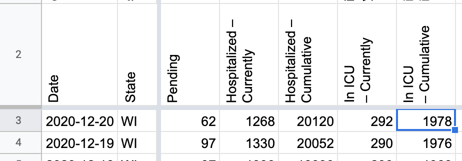
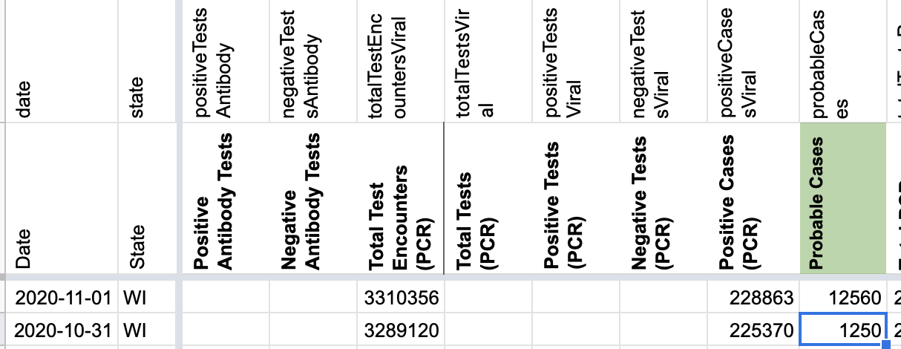
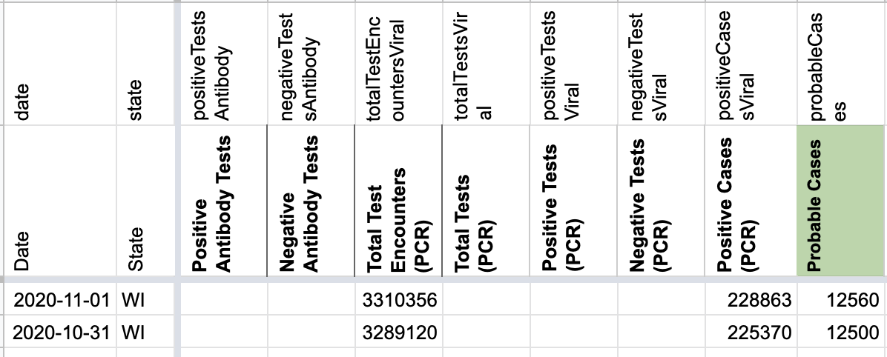

#1059: [WI] Patching late update to Recoveries 1/9/2021
Issue number 1059
jaclyde opened this issue on January 9, 2021, 9:18 PM PST
Labels Data quality
State: Wisconsin
Issue: Wisconsin was showing an incorrect number on their dashboard during our publish shift and noted it on their official twitter account. They updated the dashboard, and twitter, later on 1/9/2021. Patching from updated dashboard.
Source: https://covid-tracking-project-data.s3.us-east-1.amazonaws.com/state_screenshots/WI/WI-20210110-002635.png
Comments
#1059: [WI] Patching late update to Recoveries 1/9/2021
Issue number 1059
jaclyde opened this issue on January 9, 2021, 9:18 PM PST
Labels Data quality
State: Wisconsin
Issue: Wisconsin was showing an incorrect number on their dashboard during our publish shift and noted it on their official twitter account. They updated the dashboard, and twitter, later on 1/9/2021. Patching from updated dashboard.
Source: https://covid-tracking-project-data.s3.us-east-1.amazonaws.com/state_screenshots/WI/WI-20210110-002635.png
Comments
Updated values: Changes.txt
#1041: [WI] Patch 1/2/2021 Pending, Currently hospitalized, and Currently in ICU
Issue number 1041
jaclyde opened this issue on January 2, 2021, 8:22 PM PST
Labels Data quality Publish Time
State: Wisconsin
Describe this issue: On 1/2 Wisconsin updated Pending, Currently hospitalized, and Currently in ICU after our publish shift.
Source: (will link official screenshot once available)

Comments
BEFORE:
AFTER:
#1024: [WI] Patch 12/20 Pending, Currently hospitalized, and Currently in ICU
Issue number 1024
jaclyde opened this issue on December 21, 2020, 2:48 PM PST
Labels Data quality
State: Wisconsin
Describe this issue: On 12/20 Wisconsin updated Pending, Currently hospitalized, and Currently in ICU after our publish shift.
Source: https://covid-tracking-project-data.s3.us-east-1.amazonaws.com/state_screenshots/WI/WI-secondary-20201221-121600.png
Comments
BEFORE:
AFTER: 
#986: [WI] Patch 11/29 Pending, Currently hospitalized, and Currently in ICU
Issue number 986
jaclyde opened this issue on November 29, 2020, 6:34 PM PST
Labels Data quality
State: WI
Describe this issue: On 11/29 Wisconsin updated Pending, Currently hospitalized, and Currently in ICU after our publish shift.
Source: https://covid-tracking-project-data.s3.us-east-1.amazonaws.com/state_screenshots/WI/WI-secondary-20201130-000622.png
Comments
BEFORE:
AFTER:
#978: [WI] Patch 11/1-11/2 Pending, Currently hospitalized, and Currently in ICU
Issue number 978
hmhoffman opened this issue on November 25, 2020, 6:38 PM PST
State: WI
Dates affected: 11/1, 11/2
Describe this issue: On 11/2 we published the wrong Pending, Currently hospitalized, and Currently in ICU values for Wisconsin.
Comments
BEFORE:
AFTER:
#968: [WI] Hosp data for 11/21 is missing from screenshots.
Issue number 968
whobody opened this issue on November 22, 2020, 8:05 PM PST
Labels Backfill Data quality stale
State or US: [State name, or "US" if this is an issue with country-wide data]
WI
Describe the problem
There is no record (in screenshots) of WI updating hosp data on 11/21. It's possible they never did.
Link to data source
Comments
This issue has been automatically marked as stale because it has not had recent activity. It will be closed if no further activity occurs. Thank you for your contributions!
This issue has been closed because it was stale for 15 days, and there was no further activity on it for 10 days. You can feel free to re-open it if the issue is important, and label it as "not stale."
#967: [WI] need to backfill hosp data from 11/22, 11/20, 11/19
Issue number 967
whobody opened this issue on November 22, 2020, 8:03 PM PST
Labels Data quality
State or US: [State name, or "US" if this is an issue with country-wide data] WI
Describe the problem Pub shift did not capture the correct updates for 11/22, 11/20, or 11/19
Link to data source
https://www.dhs.wisconsin.gov/covid-19/hosp-data.htm#capabilities https://covid-tracking-project-data.s3.us-east-1.amazonaws.com/state_screenshots/WI/WI-secondary-20201120-115912.png -11/19 https://covid-tracking-project-data.s3.us-east-1.amazonaws.com/state_screenshots/WI/WI-secondary-20201121-115531.png - 11/20
Comments
#921: [WI] Patch 10/31 Probable Cases
Issue number 921
hmhoffman opened this issue on November 2, 2020, 6:40 AM PST
Labels Data quality
State: WI
Dates affected: 10/31
Describe the issue: On 10/31 there was a typo in WI negatives. It was entered as 1250, but should have been 12500. We should patch this mistake. Total and confirmed cases are unaffected.
Comments
BEFORE: 
AFTER: 
#917: [WI] Backfill Total Tests PCR for 3/3-10/19
Issue number 917
muamichali opened this issue on October 29, 2020, 1:55 PM PDT
Labels Data quality
State or US: Wisconsin
Describe the problem Wisconsin provides a time series of the tests it performed from 3/3 onwards on its website. This is backfilling the time series.
Link to data source https://bi.wisconsin.gov/t/DHS/views/PercentPositivebyTestPersonandaComparisonandTestCapacity/TestCapacityDashboard.csv
Comments
We backfilled, attached analysis sheet and sheet containing wisconsin's data. (from the above data source link)
WI - Analysis PCR Test Encounters 20201029.csv.txt WI - Wisconsin Data 10-19.csv.txt
#906: [WI] Updating Current Hospital metrics and pending 10/17-10/29
Issue number 906
jaclyde opened this issue on October 20, 2020, 10:56 PM PDT
Labels Data quality
State: Wisconsin
Problem: On 10/17 the caching issues on the Hospital page caused the values from 10/16 to be entered. The values from 10/17 were then entered on 10/18, and values for 10/18 on 10/19.
Solution: Backfill the day's proper value from 10-17-10/19 for Pending, Current Hospitalization, and Current ICU.
Sources: https://covid-tracking-project-data.s3.us-east-1.amazonaws.com/state_screenshots/WI/WI-tertiary-20201017-184144.png https://covid-tracking-project-data.s3.us-east-1.amazonaws.com/state_screenshots/WI/WI-secondary-20201019-004831.png https://covid-tracking-project-data.s3.us-east-1.amazonaws.com/state_screenshots/WI/WI-secondary-20201019-184707.png
Comments
BEFORE:

AFTER:
#876: [WI] Missed hospitalization update 9/28
Issue number 876
jaclyde opened this issue on September 29, 2020, 7:59 PM PDT
Labels Data quality Missing Data
State: Wisconsin
Problem: Current hospitalization values were not updated before our publish time.
Screenshot: https://covid-tracking-project-data.s3.us-east-1.amazonaws.com/state_screenshots/WI/WI-tertiary-20200929-003731.png
Comments
BEFORE:
AFTER
#865: [WI] We were lumping their currently hospitalized w/ pending
Issue number 865
whobody opened this issue on September 24, 2020, 12:59 PM PDT
Labels Data quality
State or US: WI
Describe the problem We were lumping their pending into currently hospitalized from roughly 4/2 - 6/9.
We also have some incorrect values throughout our time series, that became obvious when we received a time series directly from Wisconsin Hospital Assoc website.
Link to data source https://www.wha.org/COVID19Update Patients_|_Total_per_Day_data-2 2.xlsx
This has been backfilled by Rebma.
Someone, please tell me all the ways I messed this GH issue up.
Comments
WIs hospitalization data had holes between 2020-07-29 - 2020-07-22, we filled it from our previously captured values (looks like 2 sharp drops, probably due to partial data after new HHS guidelines re hospitalizations).
#852: [WI] Backfill Probable cases
Issue number 852
jaclyde opened this issue on September 19, 2020, 4:15 PM PDT
Labels Backfill Data quality Historical Data
State or US: Wisconsin
Describe the problem CTP started reporting probables on 7/28 for many states. WI has been reporting probables since it started separating out confirmed and probable case counts on 3/12. We can backfill probables using positive - confirmed until 3/12 and cross-referencing with spreadsheet provided by WI State of Probable cases linked in Issue #541.
Comments
BEFORE:
AFTER

#817: [WI] Missed 9/6 hospitalization update
Issue number 817
brianskli opened this issue on September 7, 2020, 2:14 PM PDT
Labels Historical Data Missing Data good_first_issue not stale
State or US: Wisconsin
Describe the problem On 9/6, data obtained from the Hospital Capabilities page was not updated.
https://covid-tracking.slack.com/archives/CUQ4MMTPD/p1599511709068500
Link to data source https://www.dhs.wisconsin.gov/covid-19/hosp-data.htm

Comments
#557: [WI] PCL Historicals and WS2
Issue number 557
jesseandersonumd opened this issue on June 29, 2020, 6:46 AM PDT
Labels PCL/SVP Historicals
We currently report deaths (confirmed) and deaths as the same value, but we should be differentiating between deaths (confirmed) and deaths (probable) to obtain the total value for deaths.
Comments
IMPORTANT. Make a public note before we release: "WI started breaking out its probable deaths in early June. We caught these figures on 6/29, on which there were 7 cumulative probable deaths, and only have data for them past that date. We are in the process of securing a historical time series." Then we should reach out to WI to get that data I am flagging WI as an "Other" problem with deaths (we should keep it as that) and making a note we should do this before release.
#541: [WI Historicals] Time Series of Probable Cases
Issue number 541
muamichali opened this issue on June 25, 2020, 6:26 PM PDT
Labels Backfill Data quality
State or US: Wisconsin
Describe the problem On 6/25 Wisconsin released about 2800 probable cases without a time series, so they were all attributed to today.
Link to data source WEDSS Probable COVID-19 Cases 6.25.2020.xlsx
Comments
@muamichali and I updated our historical numbers based on the state spreadsheet. It should be visible on the web site within an hour. Analysis spreadsheet: https://docs.google.com/spreadsheets/d/1CddFkiCKCY6zs5NsrILox6obhfqudAxHDzxC61vSxds/edit#gid=455785625
#521: [WI Historicals] Remove patients with pending test from current hospitalizations
Issue number 521
muamichali opened this issue on June 24, 2020, 8:19 PM PDT
Labels Data quality Historical Data stale
Question I had on the hospitalizations for WI. They seem to jump and platau higher, then drop. I'm fully aware that there are pikes and troughs with the virus, however, the hospitalized during that period don't match some of the screenshots that I have of WI from that time. Wondering where the hospitalization data came from for the the May through 1st week of June as it seems unusually high compared to other data. For example, here's a screenshot for 5/16 from the Wisconsin DHS site, that shows total COVID patients as 380, yet you have listed hundreds more.
In WI, until about two weeks ago, we were adding the number of Patients w/ COVID Test Pending to the number of Total Covid patients. We were informed that since the hospital tests everyone, we should not be doing that and we stopped doing it, but we need to correct the historical data we captured.
Comments
This issue has been automatically marked as stale because it has not had recent activity. It will be closed if no further activity occurs. Thank you for your contributions!
This issue has been closed because it was stale for 15 days, and there was no further activity on it for 10 days. You can feel free to re-open it if the issue is important, and label it as "not stale."
#365: WI hospitalization data is inconsistent
Issue number 365
witj opened this issue on May 5, 2020, 10:44 AM PDT

On April 28 the number of current hospitalizations went up by 207 from 336 to 544, but the cumulative hospitalizations only went up 41. See attached image.
Something doesn't add up.
Comments
Thanks for this @witj As of 4/27, WI started reporting people tested. Our Currently Hospitalized number reflects total COVID patients plus inpatients w. COVID tests pending. The Cumulative Hospitalized number is taken from https://www.dhs.wisconsin.gov/outbreaks/index.htm and only reflects confirmed hospitalized COVID patients.
#262: Data Verification - Zilber School of Public Health, Milwaukee, WI
Issue number 262
lblair2977 opened this issue on April 22, 2020, 10:54 PM PDT
Labels stale
Hello,
I am a public health graduate student at Zilber School of Public Health, and I have some questions specifically on the Wisconsin data.
- On 3/30, the data lists -585 tests. How can there be a negative test value?
- For the field "New Tests" are these figures reflective of that day (i.e. for 4/22, were 1,886 tests conducted or does that represent the date the test was processed/test results returned?)
- What happens to the pending test values? Do those get retroactively adjusted into that date's positive/negative results column as the results come in?
- Do we know what types of tests the state of WI is giving (i.e standard vs rapid test that has been hypothesized to have a higher false negative rate)?
I appreciate your time! Best, Lisa Blair
Comments
This issue has been automatically marked as stale because it has not had recent activity. It will be closed if no further activity occurs. Thank you for your contributions!
This issue has been closed because it was stale for 15 days, and there was no further activity on it for 10 days. You can feel free to re-open it if the issue is important, and label it as "not stale."
#88: WI: Changed counting method - update notes
Issue number 88
Jmuccigr opened this issue on March 31, 2020, 3:47 AM PDT
Labels State Notes stale
Wisconsin updated its methodology: https://twitter.com/DHSWI/status/1244705100221698048:
Updated numbers for you. And the number of people with negative test results for #COVID19_WI now reflects Wisconsin residents only and excludes duplicate lab results...
Perhaps worth a note?
(Thanks for the great project.)
Comments
This issue has been automatically marked as stale because it has not had recent activity. It will be closed if no further activity occurs. Thank you for your contributions!
This issue has been closed because it was stale for 15 days, and there was no further activity on it for 10 days. You can feel free to re-open it if the issue is important, and label it as "not stale."
Updated values: Changes.txt